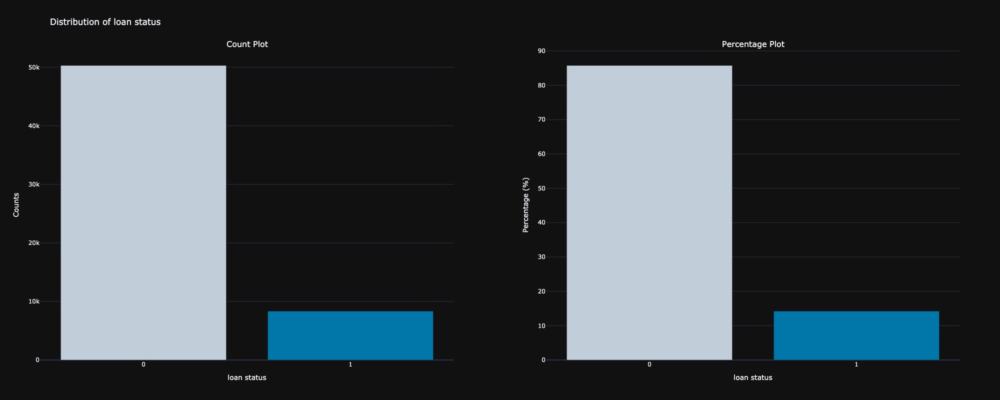
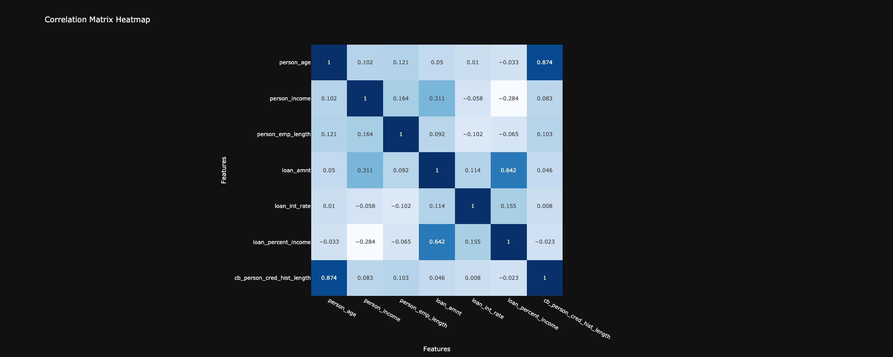
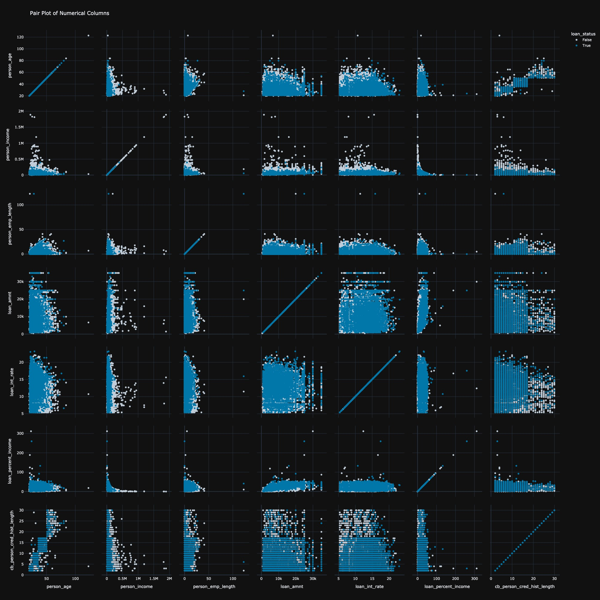
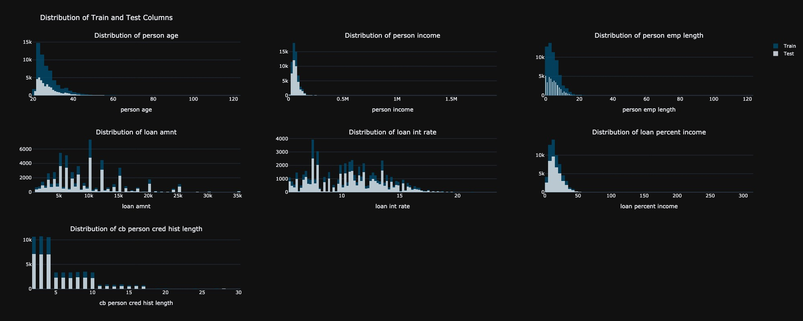
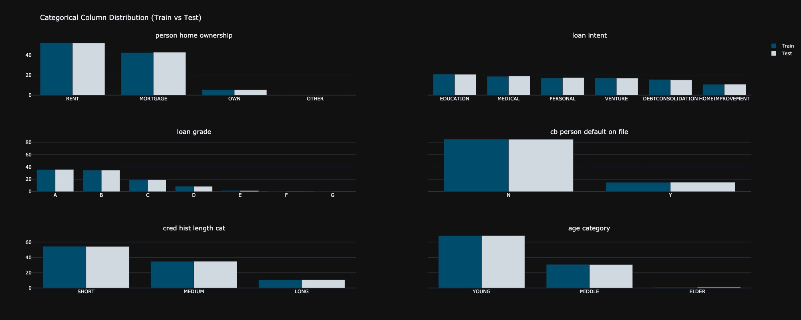
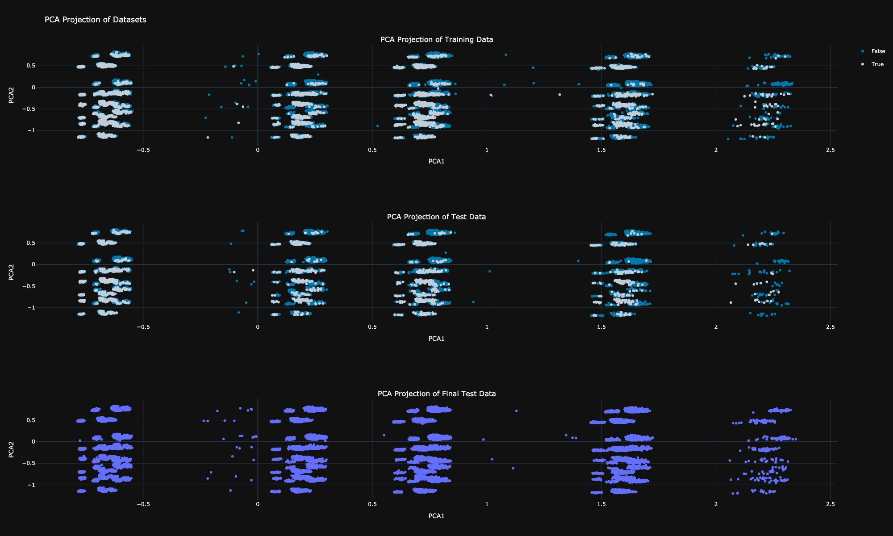
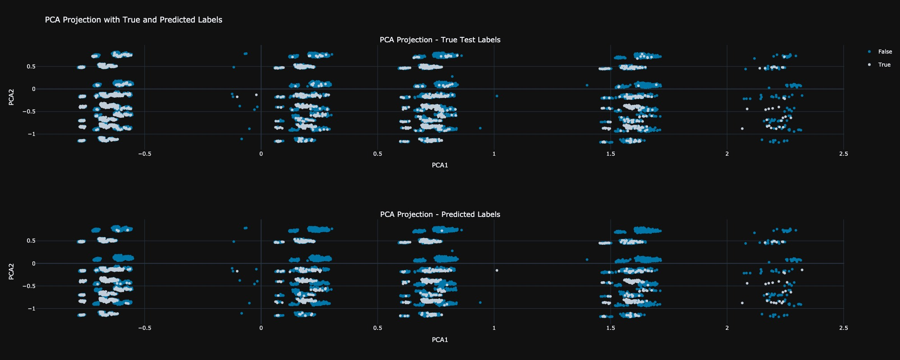
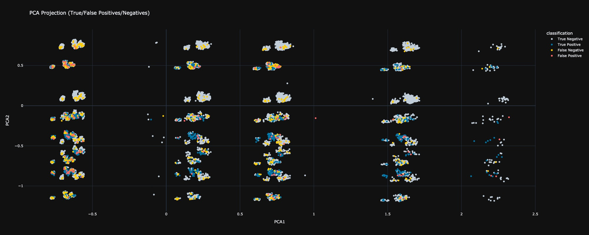
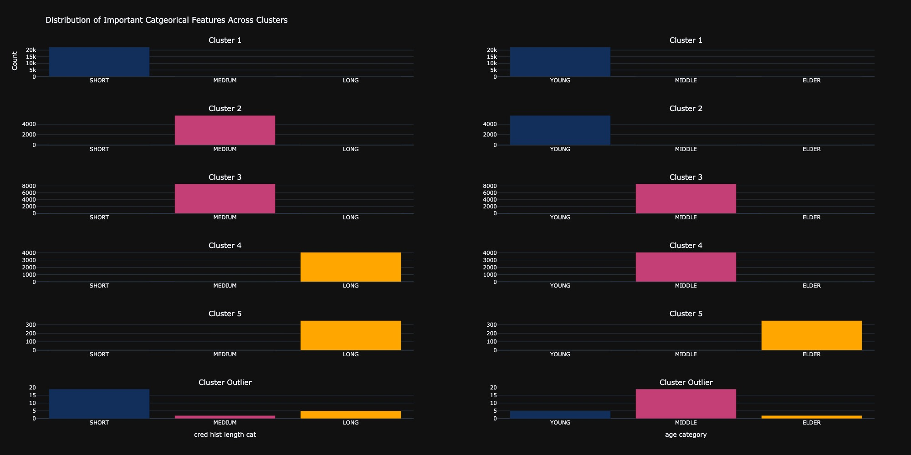

This project focuses on predicting whether a loan application gets approved. Through a systematic approach, I aimed to uncover patterns and insights from the data that could help better understand the factors influencing loan approval decisions. The original dataset is available here.
The initial exploratory data analysis will provide an understanding of the structure of the dataset,and visualize key features. Following this, several baseline machine learning models will be trained to determine which one achieves the best performance based on the Area Under the Curve (AUC) metric on the test set.
To enhance the model's predictive power, Principal Component Analysis will be employed to simplify the data and highlight key patterns. By reducing the number of variables, PCA can reveal underlying trends that may not be immediately apparent. Additionally, clustering analysis will be conducted on the PCA components to explore how applicants naturally group together, providing deeper insights into the data and helping to refine the model further.
Finally, the project will explore how the model operates within the latent space, interpreting its decision-making process. Through this approach, the project aims to enhance the predictability of loan approvals.
In this phase, the dataset is analyzed to understand the distribution of variables, identify patterns, and uncover any potential anomalies. This helps to inform subsequent steps in the modeling process.
The first step in the exploratory data analysis is to examine the distribution of the target variable, loan status, which is a binary classification indicating whether an applicant is approved for a loan. The analysis reveals that approximately 85% of the applicants have not been approved for a loan, suggesting a significant class imbalance in the dataset.
In analyzing the correlation between features, most exhibited very low correlations, with values close to zero, indicating weak or no linear relationships among them. However, two features, loan int rate and loan percent income, demonstrated a negative but very weak correlation with person income and person emp length, respectively, suggesting an inverse relationship. Conversely, person age and cb person cred hist length showed a very strong positive correlation, implying a significant linear relationship between these two variables. Finally, loan amount and loan percent income exhibited a positive relationship, indicating that as one increases, the other tends to increase as well.
The pair plot analysis revealed two key insights. Firstly, individuals with high income were almost certain to be rejected for a loan, indicating a potential bias in the loan approval process. Secondly, the relationship between person income and loan amount exhibited a hyperbolic relation, suggesting that as income increases, the amount of loan requested follows a constant ratio, reflecting a non-linear interaction between the two variables. Several anomalies were also detected, including individuals with ages above 100 and employment lengths exceeding 100 years, which are highly improbable. These outlier data points will be removed from the dataset to ensure more accurate analysis.
The histogram distribution revealed a nearly identical distribution of numerical features between the training and testing datasets. Notably, there were a few individuals paying a higher loan percentage relative to their income in both datasets. By observing the distribution of cb person cred hist length, it would be sensible to create a categorical column, classifying it into three categories: short, medium, and long.
The distribution of categorical features between the training and testing datasets were also identical. An age category column was created by observing the numerical distribution of the person age column, allowing for a more nuanced analysis of age-related trends in the data.
The performance of various classifiers was assessed based on accuracy and AUC metrics for both training and testing datasets. Among the classifiers, XGBoost achieved the highest training accuracy (96.64%) and training AUC (98.89%), indicating strong predictive power on the training set. However, it showed a slight drop in test accuracy (95.05%) and test AUC (95.26%), which suggested some level of overfitting. LightGBM and CatBoost also demonstrated robust performance, with test accuracies of 95.23% and 95.15%, respectively. Notably, Gradient Boosting had the lowest performance across all metrics, suggesting it may not be as well-suited for this dataset compared to the other models. Overall, LightGBM showed competitive performance with the best test AUC. Based on this metric, we will retrain LightGBM and further analyze its behavior in the latent space generated using PCA.
| Classifier | Train Accuracy | Test Accuracy | Train AUC | Test AUC |
|---|---|---|---|---|
| LightGBM | 0.955321 | 0.952311 | 0.976871 | 0.956872 |
| CatBoost | 0.960899 | 0.951515 | 0.976088 | 0.953927 |
| XGBoost | 0.966430 | 0.950549 | 0.988919 | 0.952626 |
| Gradient Boosting | 0.946697 | 0.946342 | 0.943244 | 0.939988 |
In this section, we will utilize Principal Component Analysis as a dimensionality reduction technique to generate a latent space for our dataset. Upon observing the distribution of the training data, test data, and final test data in this latent space, we note that all three datasets exhibit similar distributions, along with some outliers. Most importantly, five distinct clusters can be identified within the data. We will analyze the characteristics of these clusters in the next section.
In this section, we will observe the regions in the latent space where the model fails to accurately predict outcomes, identifying specific areas of misclassification. Additionally, we will analyze the true positives, true negatives, false positives, and false negatives within this latent space to gain a deeper understanding of the model's performance and its behavior regarding different prediction scenarios. This analysis will help us refine the model and improve its predictive capabilities.
In this analysis, we clearly observe that the model struggles to accurately predict outcomes in the region where the PCA2 values are greater than 0. This indicates a potential area of concern where the model may be misclassifying instances
In this assessment, we observe that the model's predictions are highly accurate in the region where PCA1 is greater than 2 in the latent space. Conversely, most data points are densely packed in the region where PCA1 is less than -0.5, which corresponds to a higher incidence of misclassifications. This observation highlights a critical area where the model's performance can be improved, suggesting a need for further analysis and potential refinement of the model in this densely populated region.
In this section, we aimed to understand the nature of the identified clusters and the basis for their grouping. Through data analysis and manual clustering, we identified five distinct clusters formed based on two categorical features: cred hist length cat and age category. The data points that did not fit any clusters were considered outliers. The following figure illustrates how each category fits into these clusters, providing insight into the characteristics that define each group.
Building on the insights from 5.2 Assessment of Classification Outcomes, we recognize that many misclassified data points are concentrated in the densely populated region where PCA1 is less than -0.5. To enhance the model's performance, we will reallocate 50% of these misclassified data points from the test set to the training set. This strategic move aims to provide the model with additional examples of these challenging cases, allowing it to learn from them effectively. By incorporating these data points into the training dataset, we anticipate an improvement in the model's ability to generalize and accurately predict outcomes in this problematic region, ultimately leading to better overall performance on the test set.
| Classifier | Train Accuracy | Test Accuracy | Train AUC | Test AUC |
|---|---|---|---|---|
| LightGBM | 0.950902 | 0.962709 | 0.972617 | 0.964740 |
| CatBoost | 0.957445 | 0.962709 | 0.973961 | 0.963814 |
| XGBoost | 0.964206 | 0.960925 | 0.986357 | 0.962455 |
| Gradient Boosting | 0.941038 | 0.956149 | 0.938776 | 0.952149 |
In all cases, the models showed improvements in Test Accuracy and Test AUC after the reallocation of misclassified points. Notably, LightGBM saw a significant jump in test performance, with Test AUC improving from 0.9569 to 0.9647, confirming that the additional challenging examples enhanced the model's predictive power. Similarly, CatBoost and XGBoost benefited from this reallocation, improving both in test accuracy and AUC. Gradient Boosting also experienced a notable uplift, though it remains the weakest performer compared to other models.
Finally, the project has demonstrated how the allocation of incomplete data points can improve the prediction of loan approval. By analyzing detailed exploratory data, we discovered key patterns that guide modeling efforts. After testing various classifiers, we found LightGBM to be the best. However, by transferring some of the unclassified cases from the test set to the training set,we have improved the abilityof the model to learn these difficult examples. This approach not only improves our accuracy,but also shows the value of iterative refinement in machine learning. Overall, theproject highlights how intelligent data management can lead to better predictive outcomes.